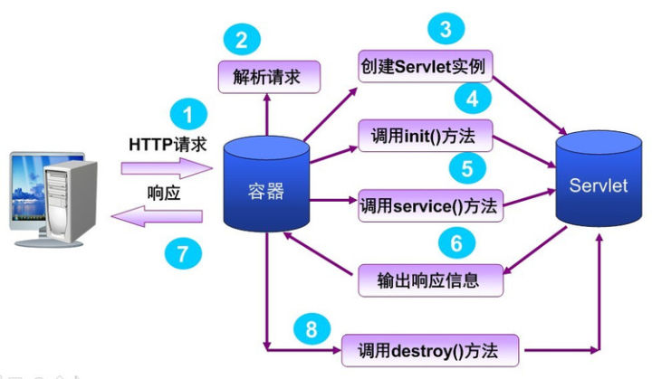
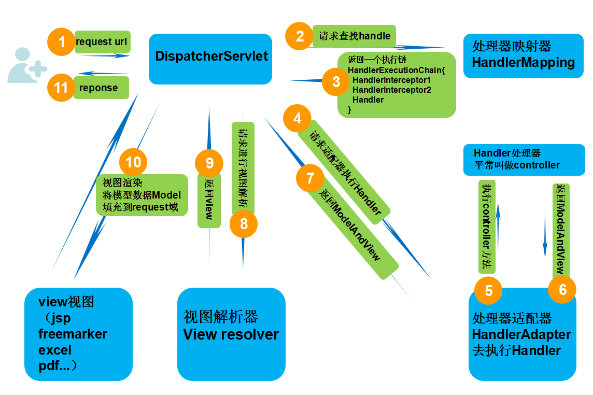

Servlet
1 | public interface Servlet { |
Servlet 接口定义了一套处理网络请求的规范，所有实现 Servlet 的类或所有想要处理网络请求的类，都需要实现那5个方法，其中最主要的是两个生命周期方法 init() 和 destroy()，还有一个处理请求的 service()。

Servlet 不会直接和客户端打交道，而是由 Servlet 容器负责（比如Tomcat）。
当容器启动的时候，Servlet 类就会被初始化，容器监听端口，请求过来后，根据 URL 等信息，确定要将请求交给哪个 Servlet 处理，然后调用 Servlet 的具体 service 方法，service 方法返回一个 response 对象，容器再把这个 response 返回给客户端。
比如：Spring 的 DispatcherServlet（前端控制器） 就实现了 Servlet 这个接口。
Spring
Spring 处理请求过程
- DispatcherServlet 接收发过来的请求，然后请求 HandlerMapping（处理器映射器），让其根据 xml 配置、注解等查找 Handler（处理器）。
- HandlerMapping 向 DispatcherServlet 返回 HandlerExecutionChain（执行链），其包含一个 Handler 和多个 HandlerInterceptor 拦截器。
- DispatcherServlet 获取 Handler 对应的 HandlerAdapter（处理器适配器），然后让 HandlerAdapter 去执行 Handler。
- Handler 执行完成后，向 HandlerAdapter 返回 ModelAndView（包括模型数据、逻辑视图名），HandlerAdapter 再向 DispatcherServlet 返回 ModelAndView。
- DispatcherServlet 请求 ViewResolver（视图解析器）进行视图解析。
- ViewResolver 向 DispatcherServlet 返回 View。
- DispatcherServlet 渲染视图，填充 Model 模型数据（在 ModelAndView 中）。
- 最后 DispatcherServlet 向用户响应结果。

详细过程：https://blog.csdn.net/uhgagnu/article/details/59157840
IoC 和 DI 区别
IoC 控制反转，指将对象的创建权，反转到 Spring 容器。
DI 依赖注入，指 Spring 创建对象的过程中，将对象依赖属性通过配置进行注入。
BeanFactory 接口和 ApplicationContext 接口区别
ApplicationContext 接口继承 BeanFactory 接口，Spring 核心工厂是 BeanFactory ,BeanFactory 采取延迟加载，第一次 getBean 时才会初始化 Bean, ApplicationContext 是会在加载配置文件时初始化 Bean。
ApplicationContext 接口扩展 BeanFactory，它可以进行国际化处理、事件传递和 Bean 自动装配以及各种不同应用层的 Context 实现
开发中基本都在使用 ApplicationContext, web 项目使用 WebApplicationContext ，很少用到 BeanFactory。
Spring AOP 里面的几个名词
切面（Aspect）：一个关注点的模块化，这个关注点可能会横切多个对象。事务管理是J2EE应用中一个关于横切关注点的很好的例子。 在Spring AOP中，切面可以使用通用类（基于模式的风格） 或者在普通类中以 @Aspect 注解（@AspectJ风格）来实现。
连接点（Joinpoint）：在程序执行过程中某个特定的点，比如某方法调用的时候或者处理异常的时候。 在Spring AOP中，一个连接点 总是 代表一个方法的执行。 通过声明一个org.aspectj.lang.JoinPoint类型的参数可以使通知（Advice）的主体部分获得连接点信息。
通知（Advice）：在切面的某个特定的连接点（Joinpoint）上执行的动作。通知有各种类型，其中包括“around”、“before”和“after”等通知。 通知的类型将在后面部分进行讨论。许多AOP框架，包括Spring，都是以拦截器做通知模型， 并维护一个以连接点为中心的拦截器链。
切入点（Pointcut）：匹配连接点（Joinpoint）的断言。通知和一个切入点表达式关联，并在满足这个切入点的连接点上运行（例如，当执行某个特定名称的方法时）。 切入点表达式如何和连接点匹配是AOP的核心：Spring缺省使用AspectJ切入点语法。
引入（Introduction）：（也被称为内部类型声明（inter-type declaration））。声明额外的方法或者某个类型的字段。 Spring允许引入新的接口（以及一个对应的实现）到任何被代理的对象。例如，你可以使用一个引入来使bean实现 IsModified 接口，以便简化缓存机制。
目标对象（Target Object）： 被一个或者多个切面（aspect）所通知（advise）的对象。也有人把它叫做 被通知（advised） 对象。 既然Spring AOP是通过运行时代理实现的，这个对象永远是一个 被代理（proxied） 对象。
AOP代理（AOP Proxy）： AOP框架创建的对象，用来实现切面契约（aspect contract）（包括通知方法执行等功能）。 在Spring中，AOP代理可以是JDK动态代理或者CGLIB代理。 注意：Spring 2.0最新引入的基于模式（schema-based）风格和@AspectJ注解风格的切面声明，对于使用这些风格的用户来说，代理的创建是透明的。
织入（Weaving）：把切面（aspect）连接到其它的应用程序类型或者对象上，并创建一个被通知（advised）的对象。 这些可以在编译时（例如使用AspectJ编译器），类加载时和运行时完成。 Spring和其他纯Java AOP框架一样，在运行时完成织入。
通知有哪些类型
前置通知（Before advice）
在某连接点（join point）之前执行的通知，但这个通知不能阻止连接点前的执行（除非它抛出一个异常）。
返回后通知（After returning advice）
在某连接点（join point）正常完成后执行的通知：例如，一个方法没有抛出任何异常，正常返回。
抛出异常后通知（After throwing advice）
在方法抛出异常退出时执行的通知。
后通知（After (finally) advice）
当某连接点退出的时候执行的通知（不论是正常返回还是异常退出）。
环绕通知（Around Advice）
包围一个连接点（join point）的通知，如方法调用。这是最强大的一种通知类型。 环绕通知可以在方法调用前后完成自定义的行为。它也会选择是否继续执行连接点或直接返回它们自己的返回值或抛出异常来结束执行。
环绕通知是最常用的一种通知类型。大部分基于拦截的AOP框架，例如Nanning和JBoss4，都只提供环绕通知。
切入点（pointcut）和连接点（join point）匹配的概念是AOP的关键，这使得AOP不同于其它仅仅提供拦截功能的旧技术。 切入点使得定位通知（advice）可独立于OO层次。 例如，一个提供声明式事务管理的around通知可以被应用到一组横跨多个对象中的方法上（例如服务层的所有业务操作）。